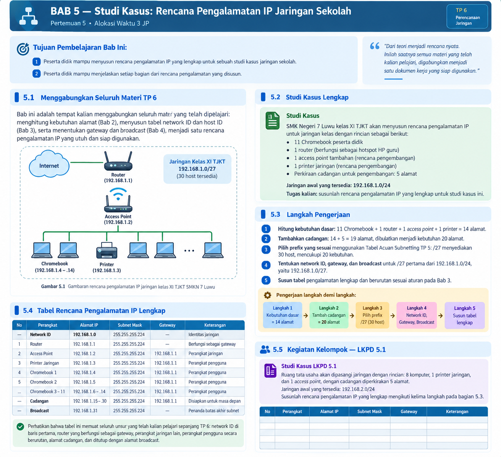

BAB 5 — Studi Kasus: Rencana Pengalamatan IP Jaringan Sekolah
Tujuan Pembelajaran Bab Ini
- Peserta didik mampu menyusun rencana pengalamatan IP yang lengkap untuk sebuah studi kasus jaringan sekolah.
- Peserta didik mampu menjelaskan setiap bagian dari rencana pengalamatan yang disusun.
5.1 Menggabungkan Seluruh Materi TP 6
Bab ini adalah tempat kalian menggabungkan seluruh materi yang telah dipelajari: menghitung kebutuhan alamat (Bab 2), menyusun tabel network ID dan host ID (Bab 3), serta menentukan gateway dan broadcast (Bab 4), menjadi satu rencana pengalamatan IP yang utuh dan siap digunakan.

5.2 Studi Kasus Lengkap
Studi Kasus
SMK Negeri 7 Luwu kelas XI TJKT akan menyusun rencana pengalamatan IP untuk jaringan kelas dengan rincian berikut:
- 11 Chromebook peserta didik
- 1 router (berfungsi sebagai hotspot HP guru)
- 1 access point tambahan (rencana pengembangan)
- 1 printer jaringan (rencana pengembangan)
- Perkiraan cadangan untuk pengembangan: 5 alamat
Jaringan awal yang tersedia: 192.168.1.0/24
Tugas kalian: susunlah rencana pengalamatan IP yang lengkap untuk studi kasus ini.
Perangkat yang direncanakan perlu berada dalam subnet yang sama pada contoh ini. Router ditetapkan sebagai gateway; access point, printer, dan Chromebook memperoleh alamat host yang berbeda.
5.3 Langkah Pengerjaan
- Hitung kebutuhan dasar: 11 Chromebook + 1 router + 1 access point + 1 printer = 14 alamat.
- Tambahkan cadangan: 14 + 5 = 19 alamat, dibulatkan menjadi kebutuhan 20 alamat agar ada sedikit ruang lebih.
- Pilih prefix yang sesuai menggunakan Tabel Acuan Subnetting TP 5: /27 menyediakan 30 host, mencukupi 20 kebutuhan.
- Tentukan network ID, gateway, dan broadcast untuk /27 pertama dari 192.168.1.0/24, yaitu 192.168.1.0/27.
- Susun tabel pengalamatan lengkap dan berurutan sesuai aturan pada Bab 3.
Pengerjaan langkah demi langkah
11 (Chromebook) + 1 (router) + 1 (access point) + 1 (printer) = 14 alamat.
14 + 5 = 19 → dibulatkan menjadi kebutuhan 20 alamat.
| Prefix | Jumlah host yang dapat digunakan | Perbandingan dengan kebutuhan 20 | Keputusan |
|---|---|---|---|
| /28 | 14 host | 14 < 20 | TIDAK CUKUP |
| /27 | 30 host | 30 ≥ 20 | CUKUP — dipilih |
- Subnet mask /27:
255.255.255.224 - Network ID:
192.168.1.0 - Gateway:
192.168.1.1(network ID + 1) - Broadcast:
192.168.1.31(block size 32, jadi 0–31)
Masukkan alamat khusus dan alamat perangkat secara berurutan, lalu sisakan rentang alamat untuk pengembangan.
5.4 Tabel Rencana Pengalamatan IP Lengkap
| No | Perangkat | Alamat IP | Subnet Mask | Gateway | Keterangan |
|---|---|---|---|---|---|
| — | Network ID | 192.168.1.0 | 255.255.255.224 | — | Identitas jaringan |
| 1 | Router | 192.168.1.1 | 255.255.255.224 | — | Berfungsi sebagai gateway |
| 2 | Access Point | 192.168.1.2 | 255.255.255.224 | 192.168.1.1 | Perangkat jaringan |
| 3 | Printer Jaringan | 192.168.1.3 | 255.255.255.224 | 192.168.1.1 | Perangkat pengguna |
| 4 | Chromebook 1 | 192.168.1.4 | 255.255.255.224 | 192.168.1.1 | Perangkat pengguna |
| 5 | Chromebook 2 | 192.168.1.5 | 255.255.255.224 | 192.168.1.1 | Perangkat pengguna |
| … | Chromebook 3–11 | 192.168.1.6–.14 | 255.255.255.224 | 192.168.1.1 | Perangkat pengguna |
| — | Cadangan | 192.168.1.15–.30 | 255.255.255.224 | 192.168.1.1 | Disiapkan untuk masa depan |
| — | Broadcast | 192.168.1.31 | 255.255.255.224 | — | Penanda batas akhir subnet |
Perhatikan bahwa tabel ini memuat seluruh unsur yang telah kalian pelajari sepanjang TP 6: network ID di baris pertama, router yang berfungsi sebagai gateway, perangkat jaringan lain, perangkat pengguna secara berurutan, alamat cadangan, dan ditutup dengan alamat broadcast. Inilah bentuk rencana pengalamatan IP yang lengkap dan siap digunakan sebagai acuan pemasangan jaringan sesungguhnya.
5.5 Kegiatan Kelompok — LKPD 5.1
Studi Kasus LKPD 5.1
Ruang tata usaha akan dipasangi jaringan dengan rincian: 8 komputer, 1 printer jaringan, dan 1 access point, dengan cadangan diperkirakan 5 alamat.
Jaringan awal yang tersedia: 192.168.2.0/24
Susunlah rencana pengalamatan IP yang lengkap mengikuti kelima langkah pada bagian 5.3.
Ruang kerja kelompok
Tuliskan perhitungan kebutuhan, pilihan prefix, network ID, gateway, broadcast, lalu lengkapi tabel.
| No | Perangkat | Alamat IP | Subnet Mask | Gateway | Keterangan |
|---|---|---|---|---|---|
| 1 | |||||
| 2 | |||||
| 3 | |||||
| 4 | |||||
| 5 | |||||
| 6 | |||||
| 7 | |||||
| 8 | |||||
| 9 | |||||
| 10 | |||||
| 11 | |||||
| 12 |
Periksa hasil kelompok
- Apakah prefix yang dipilih menyediakan alamat host yang cukup?
- Apakah network ID dan broadcast tidak diberikan kepada perangkat?
- Apakah gateway berada dalam subnet yang sama?
- Apakah setiap perangkat memperoleh alamat IP unik?
- Apakah alamat cadangan dicatat?
Rangkuman Bab 5
- Rencana pengalamatan IP disusun melalui lima langkah: menghitung kebutuhan dasar, menambah cadangan, memilih prefix, menentukan network ID/gateway/broadcast, dan menyusun tabel lengkap.
- Seluruh materi TP 4, TP 5, dan TP 6 digabungkan menjadi satu dokumen kerja yang utuh dan siap digunakan.
Latihan Soal Bab 5
- Sebutkan lima langkah menyusun rencana pengalamatan IP yang lengkap!
- Berdasarkan studi kasus pada bab ini, mengapa dipilih prefix /27 dan bukan /28?
- Mengapa router pada tabel rencana pengalamatan tidak memiliki alamat gateway?
- Susunlah rencana pengalamatan IP untuk ruang laboratorium dengan 15 komputer, 1 access point, cadangan 3 alamat, dari jaringan awal 192.168.3.0/24!
Refleksi Pertemuan 5
- Apakah rencana pengalamatan yang saya susun sudah lengkap?
- Apakah saya sudah mencantumkan network ID, gateway, dan broadcast dengan benar?
- Bagian mana yang masih saya rasa sulit dalam menyusun rencana pengalamatan?